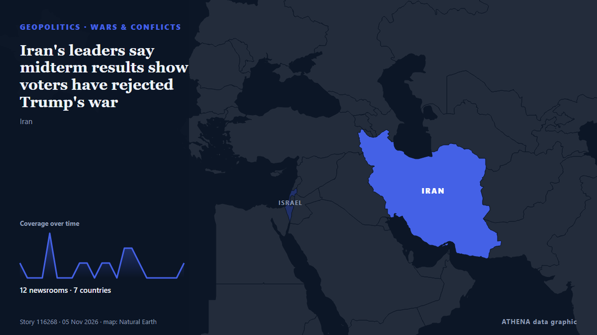

Wars & conflicts
SponsoredPresented by  Cybernetics and Artificial Intelligence Lab Welcome to the Cybernetics and Artificial Intelligence Laboratory, established at the Department of Business Administration of the National and Kapodistrian University of Athens. The lab is headed by Professor Dimitrios Thomakos. The lab aims to do research that can be published in top venues. Our research uses tools and methods of Artificial Intelligence, and lies in the following areas: - Forecasting - Decision making - Cyber security - Finance We are always looking forward to collaborating with exceptional students!
Cybernetics and Artificial Intelligence Lab Welcome to the Cybernetics and Artificial Intelligence Laboratory, established at the Department of Business Administration of the National and Kapodistrian University of Athens. The lab is headed by Professor Dimitrios Thomakos. The lab aims to do research that can be published in top venues. Our research uses tools and methods of Artificial Intelligence, and lies in the following areas: - Forecasting - Decision making - Cyber security - Finance We are always looking forward to collaborating with exceptional students!
| 23 Oct | 0 |
|---|---|
| 24 Oct | 0 |
| 25 Oct | 0 |
| 26 Oct | 1 |
| 27 Oct | 0 |
| 28 Oct | 0 |
| 29 Oct | 0 |
| 30 Oct | 0 |
| 31 Oct | 2 |
| 1 Nov | 4 |
| 2 Nov | 7 |
| 3 Nov | 8 |
| 4 Nov | 1 |
| 5 Nov | 0 |

Iran's leaders say midterm results show voters have rejected Trump's war
Iranians on Wednesday struck a defiant tone, celebrating U.S. voters’ rebuke of President Donald Trump in the midterm elections while many in the Middle East waited to see how the results could… from Africanews (English)
North Korea launches unidentified projectile toward the sea, South Korea says
South Korea says North Korea has launched an unidentified projectile toward the sea. from ABC News (International)
2,800 troops to join first Ukraine support force exercise in Poland
The drill will simulate moving troops and supplies such as food and fuel, and was agreed at a Coalition of the Willing summit in July. from The Independent
US strikes Iran’s Qeshm island – Report
The US has not publicly announced the attacks, so as not to signal any intention of resuming major combat operations, the Wall Street Journal reported. from CNA (Channel NewsAsia)
Iran Speaker: Ball in US court to prevent war
Shafaq News- Tehran Iran has delivered a "strong and rational response" to Washington, and the ball is now in the United States' court to prevent war, Parliament Speaker Mohammad Bagher Ghalibaf said… from Shafaq News (English)
Death toll hits 29 after Russian strike on Ukrainian aid site, with 48 still missing
Russia launched 289 attack drones, 17 ballistic missiles and 59 cruise missiles across nine regions, President Zelenskyy said in an online post that noted the barrage coincided with U.S. elections. from NPR
War widens in the Black Sea in a test of NATO red lines
LONDON/BUCHAREST, Nov 3 - After seven strikes on cargo ships near NATO members Romania and Bulgaria last month, the US-led military alliance said it would deploy maritime patrol aircraft, radars and… from The Straits Times
Iran-US deal still out of reach despite heightened diplomatic efforts
Iran and the United States are far from reaching a deal to end the war, a senior Iranian official told Reuters on Tuesday, despite heightened diplomatic efforts to prevent a potential return to… from Arab News
Putin orders private data centres to set aside 10% of capacity to support IT infrastructure
Russian data centers have become targets of Ukrainian drone attacks in recent weeks. from The Moscow Times
Greece inks deal for KC-390 fleet
The purchase, arranged via a government-to-government agreement between Greece and Portugal, covers three KC-390 aircraft with options for up to six manufactured by Brazilian planemaker Embraer. from Breaking Defense
Zelenskyy: Ukraine will halt strikes on Russian refineries if US provides interceptors
President Volodymyr Zelenskyy has informed US media that Ukraine will stop targeting Russian oil refineries in exchange for Patriot interceptor missiles or halted Russian attacks. from Ukrainska Pravda (English)
Israeli strikes kill three people in Gaza, medics say
Israeli strikes killed at least three Palestinians and wounded several others in the Gaza Strip on Monday, the territory’s health officials said. from Cyprus Mail
N. Korea tests 'dispersal warhead' for cruise missiles following cluster bomb test
SEOUL, Nov. 3 (Yonhap) -- North Korea has tested a "dispersal warhead" for a str... from Yonhap (English)
Oil prices plunge more than 4% as US-Iran talks raise hopes of ending war
Both oil benchmarks are down in early trading. from The Business Times
Iran Says Contacts Over Ending War Continue After Talks Finish With No Breakthrough
Contacts between Iran and the United States to end their eight-month war are continuing, Tehran said on Monday, after days of Iranian talks with Qatari mediators ended with altered proposals but no… from gCaptain
Oleshky ceasefire expires, Ukraine evacuates civilians from parts of Kherson region
Nov 1 - Ukraine's military said it evacuated 167 people from threatened areas of southern Kherson region on Sunday as a temporary local ceasefire expired — two days after buses carried residents out… from The Straits Times
Hebron governor says Israeli forces withdraw from city after 10-day siege
Hebron Mayor Youssef al-Jaabari says families forced from their homes can return and students can go to school. from Al Jazeera English
Saudi civil defence sounds all-clear after alerts in southern cities
Nov 2 - Saudi Arabia's civil defence authority on Monday said the threat had passed shortly after issuing alerts for the southern and western cities of Khamis Mushait, Abha, Taif and Najran, amid… from The Straits Times
Coalition Destroys 5 Houthi Ballistic Missiles, 4 Drones Fired at Saudi Arabia
Riyadh: Saudi forces on Tuesday intercepted a ballistic missile aimed at the kingdom's capital, said a spokesman for the Riyadh-led coalition backing Yemen's government, after auth... from Oman Observer